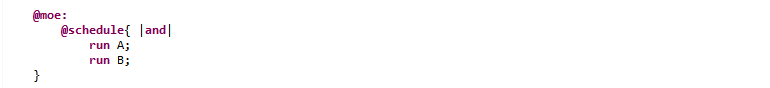
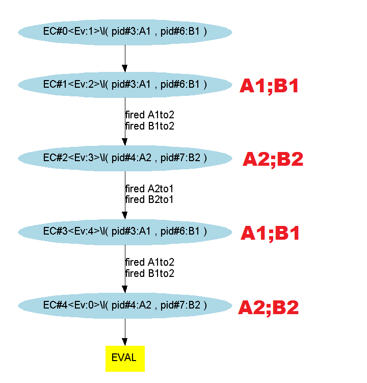
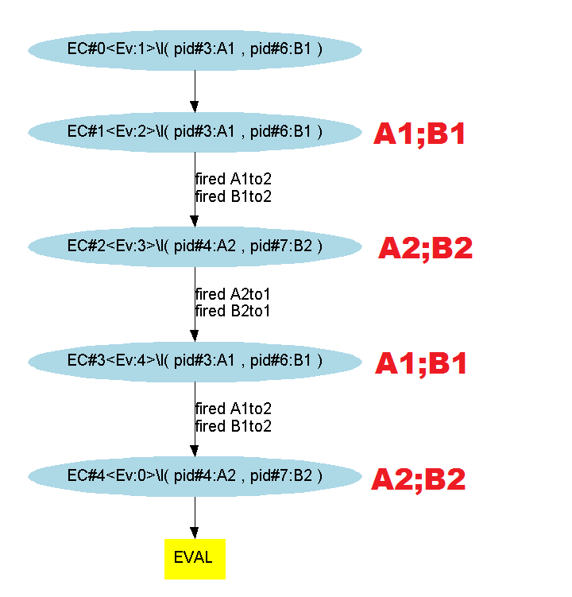

Both processes are evaluated from the initial context. If they both terminate, both contexts of resulting sets will be merged, providing that there are no concurrent accesses and the merge of their reachability constraints is satisfiable. Thus, we will simulate their strict simultaneous evaluation, i.e. their synchronous evaluation. Otherwise, the evaluation fails.
Considering 2 processes : P and Q, with strong synchronism, both processes are evaluated from the initial context and, if they both finish, we will merge two by two the contexts of both of the resulting ensembles when no concurrent access is effective and their common reachability constrains are satisfied. This way we will have simulated a strictly simultaneous evaluation which means a synchronous one.
Applying this on our most basic example, the "@moe:" section looks like :
And exploring the different paths with the symbolic engine (3, 4 and 5 evaluation steps) gives us (here the execution is simultaneous) :
 
